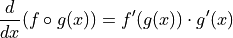
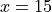
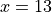
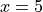
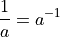

Chain Rule#
Composite Functions
The Chain Rule

The Gaussian Function
The Normal density function, sometimes called the Gaussian function in honor of Johann Carl Friedrich Gauss who discovered its formula, is an important function in statistics. Graphically, the Normal density curve is a bell curve. Its functional form is given by,

The constants,  and
and  , are parameters of the density function. These parameters determine the shape and curvature of the bell curve. They are known quantities; in other words, they may be held constant and treated as numbers. Use the Normal density function to answer the following questions.
, are parameters of the density function. These parameters determine the shape and curvature of the bell curve. They are known quantities; in other words, they may be held constant and treated as numbers. Use the Normal density function to answer the following questions.
Find

Find

Find the value of
 where
where 
Find the values of
where 
Suppose and . Use a graphing utility (Desmos is good<https://desmos.com>) to plot the Normal density function. Draw vertical lines at the values of
found in part c and part d.Find the equation of the tangent line at the following points (yes, all of them),







Plot the tangent lines using the same graphing utility
Describe what is happening to the derivative at each point on the curve labelled in part e.
Hint
What happens to the direction of the tangent line at each of the critical points found in part e?
Deriving the Quotient Rule
Recall the Product Rule and Quotient Rule for differentiation,
The Product Rule

The Quotient Rule

The Product Rule is simpler to remember than the Quotient Rule. Moreover, the Quotient Rule can be derived from the Product Rule using the Chain Rule, if we recall one simple rule of exponents,

In this problem, we will show how to apply this property of exponents to get the Quotient Rule from the Product and Chain Rule.
Write the quotient
 as a product using a negative exponent.
as a product using a negative exponent.Take the derivative of the expression in part a by applying the Product Rule and then the Chain Rule.
Find a common denominator and simplify the expression in part b.